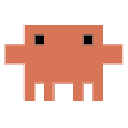

What can I do for you?
I work inside your own tabs and on your computer, without touching your mouse or keyboard. I never make payments.

npm install -g @anthropic-ai/claude-codeclaude in a terminal and follow the promptsAll tabs (Opia Link): Opia's own extension, so Opia can work in every tab you have open, with no tab picking. Set it up once with Connect my Edge. Picked tabs: the store's Playwright Extension; Opia only sees tabs you put in its group. Invisible browser: no setup, but results don't appear in your tabs. In every mode, Opia never makes payments.
Hide, browser and path settings apply to Opia's own browser.
I work inside your own tabs and on your computer, without touching your mouse or keyboard. I never make payments.